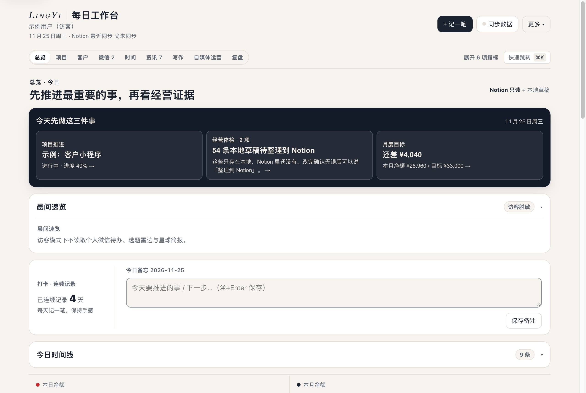

差异化能力 · 01严格只读 · 绝不代发
微信 · 批奏折统一流
把微信 MCP 里的私聊待回复、商机机会、客户咨询、群 @ 我与白名单高价值群选题归并进双列发丝线视图。支持跨轮次进展 Diff（旧摘要 → 最新进展）、按最新消息时间自动重浮、以及本地模型三口吻回应草稿一键复制。
面向一人公司与独立开发者的本地优先经营工作台。 纯 Python 标准库驱动、零外部构建依赖；数据只读拉取自 Notion / 微信 MCP / 自有订阅库，写回严格走白名单，所有草稿与记录留在你自己的硬盘里。

Core Capabilities
不是把十几个仪表盘硬塞进一张大表，而是按“早上定优先级 → 白天推进 → 晚上复盘”的真实节奏组织。
把微信 MCP 里的私聊待回复、商机机会、客户咨询、群 @ 我与白名单高价值群选题归并进双列发丝线视图。支持跨轮次进展 Diff（旧摘要 → 最新进展）、按最新消息时间自动重浮、以及本地模型三口吻回应草稿一键复制。
打开工作台第一眼先看「今天先做这三件事」与 3 列发丝线「晨间速览」，再看月度净额目标进度与缺口测算、经营体检与收支流水。全局支持 ⌘K 命令面板毫秒级跳转与查账。
Local-First Architecture
工具只做你看得见、控得住的事：不上传云端、不静默写外部账号、断网也能打开。
127.0.0.1:8787，支持 HttpOnly 会话 Cookie 与 CSP 安全头?token=，不留本地明文令牌workbench.local.html，断网双击即看Quick Start
不需要任何账号或 API Key 也能先跑起来；按需逐步接入 Notion、微信 MCP 与 Obsidian。
git clone https://github.com/Jascenn/daily-workbench.git cd daily-workbench python3 app.py
HttpOnly 会话 Cookie 并清除地址栏令牌。# 1. 一键并行同步 Notion / 资讯 / 自媒体 / 微信 / 雷达 bash scripts/sync-now.sh # 2. 单独刷新知识星球 24h 日报 + 7 天周报 python3 scripts/sync/zsxq-daily-sync.py # 3. 单独刷新微信只读批奏折快照 python3 scripts/sync/wechat-sync.py
~/.config/daily-workbench/ 放入 Notion Token 与数据库配置，即可拉取收支/项目/客户并开启白名单回写。wechat-groups.json 白名单群配置，自动生成进展 Diff 与群选题。# 重新拼装单文件前端并执行 CSS 门禁检查 python3 scripts/build-workbench.py --check --lint-css # 生成可双击离线打开的单文件快照 python3 scripts/sync/make-local.py # 运行 800+ 前端逻辑测试 node scripts/tests/test-workbench-logic.mjs
make-local.py 会把最新快照内嵌进 workbench.local.html，断网或停服时也能直接双击查看（自动备份轮转留 10 份）。launchd 让 app.py 随开机静默运行在 127.0.0.1:8787，并定时触发晨间同步。FAQ
完全可以。启动 python3 app.py 后切到「访客模式」，系统会在内存中注入一套完整的脱敏示例数据（覆盖收益、项目、客户、微信批奏折、资讯、写作与时间），不读也不写任何真实文件。
绝对不会。微信层从架构上就是严格只读的：只拉取本地只读快照与生成三口吻草稿复制到剪贴板，服务端不具备发微信能力（/api/wechat/action 保持 501 禁用），确保零社死风险。
个人工作台要陪你用很多年，而不是每隔半年修一次 node_modules 依赖冲突。当前采用 web/ 模块化源码 + 纯 Python 拼装与 CSS 重复门禁，既保持模块化可维护性，又做到单文件离线可双击打开。
全部快照、缓存、状态与草稿均存在你本机目录与浏览器 localStorage 中，服务端默认仅监听 127.0.0.1，不向任何第三方遥测或云端上报。
支持。整套界面基于语义化设计令牌构建，浅色暖米纸与深色夜墨双主题一键切换，宽屏双列与手机窄屏单列自适应。
Changelog
知识星球简报升级为站内详版阅读弹窗（离线直开）；全站磨砂吸顶导航、晨间速览发丝线、知识星球指标矩阵与弹窗 160ms 微动效；资讯页新增一键「刷新订阅」。
接入微信「批奏折」统一流（双列发丝线 + 类型×状态筛选 + 新消息自动重浮）、只读三口吻回应草稿弹窗、跨轮次进展 Diff 与白名单群选题。
前后端按领域模块化拆包（零外部构建依赖 + CSS 0/0 门禁）、HttpOnly 会话 Cookie 与 CSP 安全加固、4 组 DAG 并行同步、知识星球 24h/7 天双视图简报。